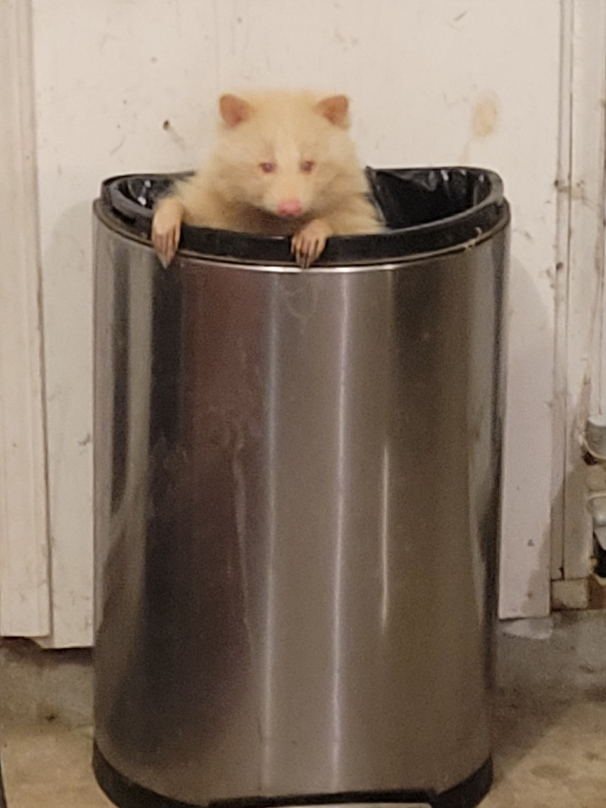

A guide to understanding, respecting, and humanely coexisting with wildlife in our neighborhoods
Why Coexistence Matters
As cities expand, wildlife is increasingly forced to adapt to urban environments. Animals such as raccoons, squirrels, birds, and coyotes are not invading our spaces; they are responding to habitat loss and changing landscapes. Learning how to coexist with urban wildlife helps reduce conflict, protects animals, and creates safer communities for people and animals alike.

What You'll Learn
- How to identify common urban wildlife
- What to do when you encounter injured or young animals
- Ways to humanely prevent conflicts around homes and neighborhoods
- Common myths and misconceptions about wildlife behavior
Featured Wildlife
Common Urban Wildlife
Many species have adapted remarkably well to city life. Understanding their behaviors is the first step toward peaceful coexistence.
Call to Action
Coexisting with wildlife starts with knowledge, patience, and compassion.